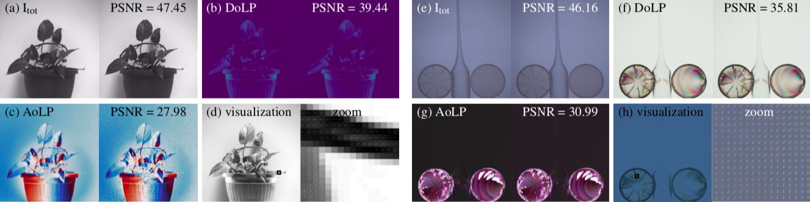

Left (a)-(d): Monochrome polarization demosaicking results for total intensity, DoLP, AoLP and visualization with unpolarized
illumination. Right (e)-(h): Color polarization demosaicking results for total intensity, DoLP, AoLP and visualization with polarized illumination.
Our proposed algorithm outperforms state of the art for both monochrome and color polarization focal plane arrays.
Abstract
Division-of-focal-plane (DoFP) polarization image sensors allow for snapshot imaging of linear polarization effects with inexpensive
and straightforward setups. However, conventional interpolation based image reconstruction methods for such sensors
produce unreliable and noisy estimates of quantities such as degree of linear polarization (DoLP) or angle of linear polarization
(AoLP).
In this paper, we propose a polarization demosaicking algorithm by inverting the polarization image formation
model for both monochrome and color DoFP cameras. Compared to previous interpolation methods, our approach can significantly
reduce noise induced artifacts and drastically increase the accuracy in estimating polarization states. We evaluate and
demonstrate the performance of the methods on a new high-resolution color polarization dataset. Simulation and experimental
results show that the proposed reconstruction and analysis tools offer an effective solution to polarization imaging.
Main results
Hydro-gel balls
3D rendering of water absorption by Hydro-gel balls, with a slice comparison of the ST-tomography approach (lower left) and our method (upper
right).
Compression of the copper foam
(a-b): The height (in mm) of the copper foam before and after the
compression process, respectively. The total displacement during the compression
is 3.77mm, uniformly distributed over 192 scans. 60 projections
are obtained for each scan. (c): the states of the foam after 192 scans. (d)
The Micro-CT setup for the in-situ compressions of the foam. (e):Algorithm comparison for the compression of copper foam. First
row: results from different reconstruction methods compared to the ground
truth; Second row: the absolute error for time frame 150. The dynamic range
of density values is (0, 4600).
Capillarity effect in porous rock
Reconstruction results for the porous rock dataset. Images (a) and
(c) represent respectively the rock before and after the scan. Some representative
CT projections are given in (b). The rendering results in (d) show the
absorption of liquid over time.
Pills dissolved in water
Pills dissolving in water. This is our fastest dataset with only 30
projections captured in 3 minutes.